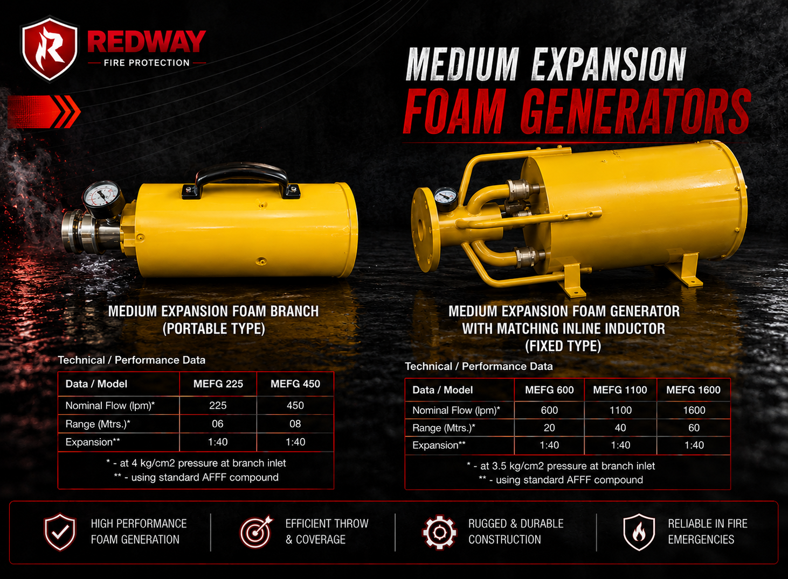

Fire Protection Products
Premium Fire Safety Equipment Built to Protect
Fire Safety Equipment
Browse our complete range of fire protection products, each manufactured to the highest standards.

Water Flow Monitor
Our water flow monitors are precision-engineered from solid brass and stainless steel to provide accurate, real-time measurement of water flow within fire protection piping networks. Each unit integrates a pressure gauge and flow indicator into a single compact assembly, eliminating the need for separate instruments. Designed with ANSI-standard flanged connections for straightforward installation, these monitors are widely used in high-rise buildings, industrial plants, and commercial complexes where continuous system verification is critical. The robust construction resists corrosion in wet-riser and sprinkler supply lines, ensuring reliable readings over years of service.
Enquire About Water Flow Monitors
Hydrant Valves
Redway hydrant valves are manufactured from high-grade gunmetal and brass castings to withstand working pressures up to 21 kg/cm². Available in single-headed and double-headed landing valve configurations, they comply with IS 5290 and BS 5041 standards. The precision-machined seat and spindle assembly ensures drip-free shut-off even after extended dormant periods. These valves are essential components in wet-riser, dry-riser, and yard hydrant systems serving factories, refineries, warehouses, and multi-storey commercial buildings across India. Every valve is hydrostatically tested before dispatch to guarantee leak-proof performance on site.
Enquire About Hydrant Valves
Hose Reels
Our fire hose reels are designed for rapid first-aid fire fighting in offices, hotels, hospitals, malls, and industrial premises. Available in wall-mounted fixed, swinging, and recessed configurations, each reel houses 30 metres of 19 mm reinforced rubber-lined hose with a shut-off nozzle for variable spray patterns. The mild steel drum is powder-coated for corrosion resistance, and the swivel joint allows 180° rotation for full area coverage. Manufactured in accordance with IS 884 and BS EN 671-1 standards, our hose reels deliver dependable performance when every second counts during a fire emergency.
Enquire About Hose Reels
Couplings
Redway couplings are precision-cast from leaded gunmetal and brass to ensure secure, leak-proof hose connections under high-pressure fire fighting conditions. Our range includes instantaneous couplings (male and female), Storz symmetrical couplings, and threaded adaptor couplings in sizes from 38 mm to 150 mm. Each coupling is machined to tight tolerances and complies with BS 336, IS 903, and DIN 14307 standards. Widely used by fire brigades, industrial fire crews, and building hydrant systems, these couplings enable rapid hose assembly during emergencies. All units undergo pressure testing to guarantee reliable field performance.
Enquire About Couplings
Inline Inductors
Our inline foam inductors are venturi-based proportioning devices that draw foam concentrate directly from a storage container and mix it into the water stream at precise ratios. The adjustable metering valve allows operators to select proportioning rates from 1% to 6%, making the unit compatible with AFFF, AR-AFFF, and protein foam concentrates. Constructed from cast aluminium or brass with stainless steel internal components, these inductors resist chemical corrosion from foam agents. They are widely deployed in petrochemical plants, fuel storage terminals, and airport fire tenders where rapid foam deployment is critical for flammable liquid fire suppression.
Enquire About Inline Inductors
Foam Generators
Redway foam generators produce large volumes of expanded foam to blanket and suppress fires involving flammable liquids, solvents, and petroleum products. Available in medium expansion (20:1–200:1) and high expansion variants, they feature a stainless steel body with a perforated screen and integrated air-aspiration chamber. The generators connect directly to a standard fire hose line fed through an inline inductor or proportioning system. Ideal for bund areas, tank farms, loading bays, and process plant fire protection, our foam generators are manufactured in our Ahmedabad facility and tested to meet relevant NFPA 11 guidelines.
Enquire About Foam Generators
Foam Branches
Our foam making branch pipes are purpose-built for direct application of low expansion foam onto burning liquid fuel surfaces. Constructed from lightweight aluminium alloy with a brass air-aspirating head, each branch pipe draws in ambient air to expand the foam solution and project it up to 12 metres. The integrated pickup tube connects to a 20-litre foam compound container, enabling self-contained operation without a separate proportioning system. Foam branches are standard equipment for fire brigades, oil depot fire teams, and industrial safety squads dealing with Class B fires involving petrol, diesel, and chemical solvents.
Enquire About Foam Branches
Handline Nozzles
Redway handline nozzles are engineered for frontline fire fighting crews who need rapid switching between jet, spray, and shut-off modes during active fire operations. Manufactured from hard-anodised aluminium with a brass swivel inlet, each nozzle features a pistol-grip handle and a rotating selector to transition between a concentrated jet stream and a wide-angle fog pattern. Constant-flow models maintain a steady discharge rate regardless of inlet pressure variations, while automatic pressure-control variants self-adjust to optimise water delivery. Suitable for municipal fire brigades, industrial fire tenders, and building hydrant systems, these nozzles are built to withstand the demanding conditions of sustained fire combat.
Enquire About Handline Nozzles
Mobile Foam Trolley Units
Our mobile foam trolley units are self-contained, wheeled fire suppression systems designed for rapid deployment at fuel storage areas, loading bays, and workshop floors. Each trolley comprises a mild steel tank (available in 50L, 100L, and 200L capacities) pre-charged with AFFF premix solution, a delivery hose of up to 15 metres, and a foam making branch pipe for directed application. The heavy-duty chassis with pneumatic tyres allows a single operator to manoeuvre the unit quickly across rough terrain. Ideal for petrochemical facilities, power plants, and large manufacturing complexes where piped foam systems may not reach every risk zone.
Enquire About Foam Trolleys
Foam Makers
Redway foam makers (foam chambers) are specialised assemblies mounted on the rim of petroleum and chemical storage tanks to deliver a gentle blanket of expanded foam across the liquid surface during a fire. The unit consists of a foam chamber body, a vapour seal, a deflector plate, and a foam dam — all manufactured from stainless steel or carbon steel with an epoxy-coated interior for chemical resistance. Compatible with AFFF and fluoroprotein foam concentrates, our foam makers support both top-pouring and subsurface injection configurations. They are widely installed at oil refineries, fuel tank farms, and chemical processing plants across India in accordance with NFPA 11 and IS 12298 guidelines.
Enquire About Foam Makers
Stand Post
Our fire hydrant stand posts (also known as standpipes or pillar hydrants) connect to underground fire mains and bring the water supply above ground level for easy hose attachment during emergencies. Available in single-outlet and double-outlet configurations, each stand post is manufactured from heavy-duty cast iron or ductile iron with a flanged base for bolting onto the underground sluice valve. The outlet heads accept standard instantaneous couplings and are protected by a removable cap. Designed to withstand external impact and weather exposure, these stand posts are essential infrastructure for industrial campuses, residential townships, and municipal fire hydrant networks across Gujarat and India.
Enquire About Stand Posts
High Expansion Foam Generator
Redway high expansion foam generators produce massive volumes of lightweight foam at expansion ratios between 500:1 and 1000:1, enabling total flooding of enclosed spaces in minutes. The generator draws in atmospheric air through a mesh screen while a fan forces the foam solution through a nozzle array, creating a dense foam blanket that smothers the fire and cools surrounding structures. Constructed from stainless steel and aluminium, these units are designed for protecting aircraft hangars, warehouses, cable tunnels, ship holds, and basement car parks. They are compatible with high-expansion foam concentrates and can be integrated into automatic detection-and-suppression systems for unattended operation.
Enquire About High Expansion Foam Generators